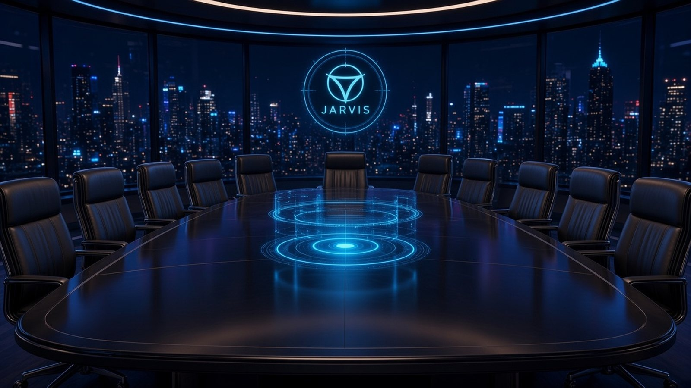

AT YOUR SERVICE
A LITTLE AMBITION GOES A LONG WAY
What shall we build?
Think aloud. I’ll help put the pieces together.
Click the microphone to start a conversation
Luna conversation · Astra reasoning
WORKSPACE ✧
Clarity before complexity.
A LITTLE AMBITION GOES A LONG WAY
Think aloud. I’ll help put the pieces together.
THE CONVERSATION, RECORDED
Your shared history. Jarvis’s voice remains available while you review it.
YOUR SECOND BRAIN
A living constellation of your files and their relationships.
Connect a project to explore its files, folders
and locally extracted code relationships.
THE TABLE
Jarvis chairs and assigns. Click a director for voice and model settings. A seat that is not connected says so.

FROM AN IDEA TO SOMETHING REAL
Capture the brief. Establish the direction. Keep the next move clear.
BETTER DECISIONS, FEWER MEETINGS
A place for independent proposals, thoughtful debate and recorded decisions.
Your Astra conversation works independently.
Source tasks can run in the background. Multi-model council meetings are not connected yet.
YOUR ASSISTANT, YOUR WAY
Checking local Ollama…
Luna can hand complex reasoning to Astra and explicit Jarvis source tasks to a background worker. Other worker providers and Jarvis MCP are not connected yet.
The orb animates at 30 FPS and pauses while hidden. Turn motion off for a quieter desktop.
Realtime cloud voice needs an OpenAI API key and has API usage charges. Your model sign-in is used for delegated reasoning.
The Chief Technology Officer uses an Anthropic key stored only in Keychain. If you saved one elsewhere, enter it again here.
The Director of Research uses an xAI key, and the Creative Director launches Cursor cloud agents with a Cursor API key. Both are stored only in Keychain.
Kokoro on this Mac. Jarvis defaults to Lewis, British English.
Microphone input uses on-device Apple speech recognition when available. Click the microphone once to start a conversation. Your turn is sent after a brief pause; Jarvis speaks and automatically listens again. Click the microphone again to end. Listening pauses during replies to prevent speaker echo.
Conversation history and voice preferences stay in local app storage. Recent dialogue is sent to the selected model when you send a message.